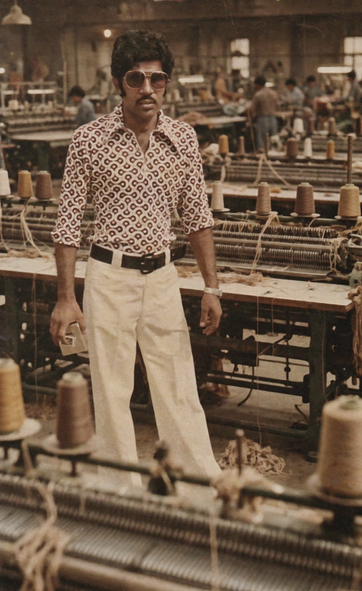
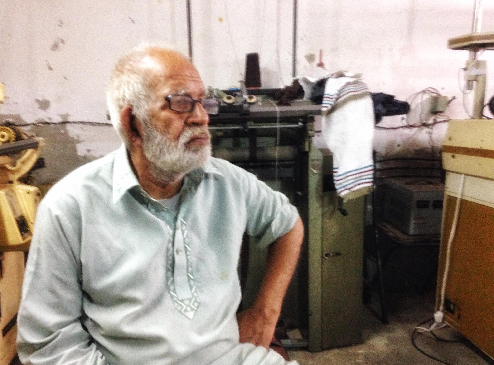
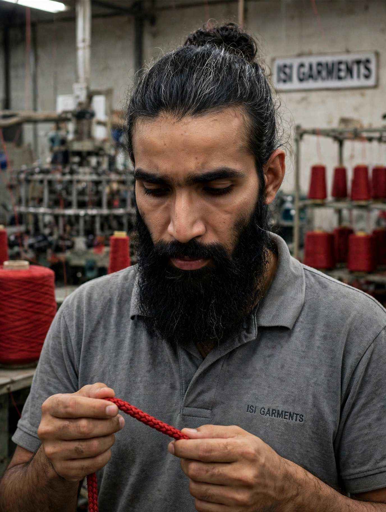
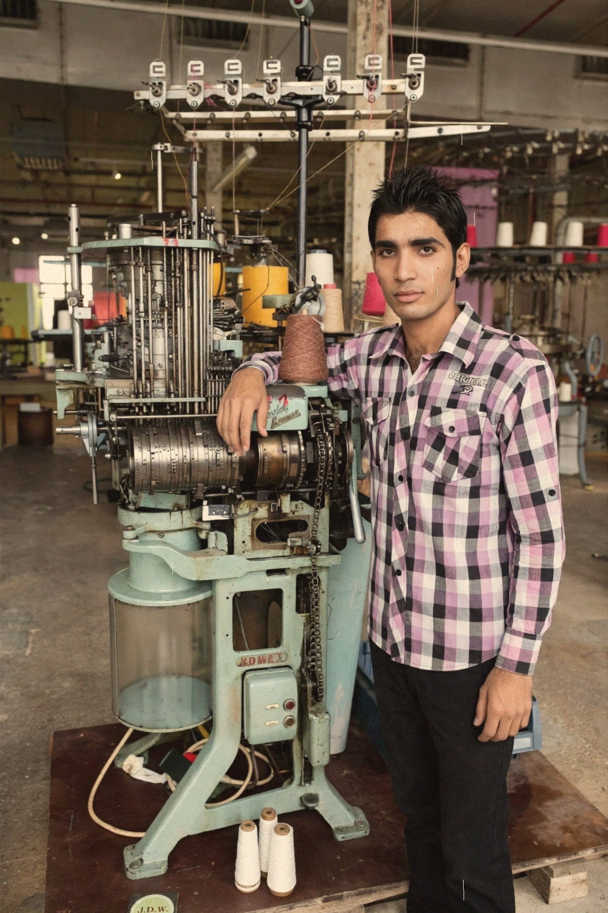

A family connection to textiles, carried forward through practical experience.
Our story is rooted in generations of work around weaving and knitting machinery, and in a hands-on approach to learning textile production from the machine floor.
Textile work was part of family life long before ISI GARMENTS.
Our grandfather spent his entire working life operating fabric-weaving loom machines. Our father devoted his working life to the knitting industry, working for one employer throughout his career. He did not found ISI GARMENTS; his knowledge and example became an important part of the family's connection to textile work.
Our father began at the age of nine on hand-operated flat knitting machines. Over approximately 66 years in the industry, he worked across hand-flat and circular knitting systems. In the 1980s, his work expanded to circular knitting machines. His experience included the Dubied Flat JDR mechanical and punch-card Jacquard knitting system, where steel cards were used for design patterns and plywood cards for machine functions.
In the final ten years of his life, he visited our factory to supervise Shima Seiki knitting operations. He passed away in 2021 at the age of 75. His practical knowledge and discipline remain part of our family's textile story.

Three generations. A lifetime around textile machinery.
From fabric weaving and decades of knitting experience to the next generation's hands-on work across textile processes.







Curiosity became practical machine experience.
An interest in how things work developed into hands-on experience across knitting, dyeing, finishing and cord manufacturing.
Childhood curiosity
From an early age, I was interested in mechanisms and preferred taking toys apart to understand how they worked.
First machine experience
In seventh class, I began operating a hand-operated flat knitting machine and producing fabric. I learned to operate it in around three minutes. After a short period on hand-flat knitting, I moved on to circular knitting machines.
Knitting and garment work
My practical experience includes producing plain uniform sweaters with 1×1 borders and plain bodies, military sweaters, manually filled Jacquard designs on a single-bed hand knitting machine, and Jacquard patterns on a drum machine. I also worked on garment finishing, including cutting and steam pressing waistcoat work, and operated a hand linking machine and a knitted dori machine.
Dyeing mill operations
My dyeing-mill experience spans machine operation, colour room work, laboratory work, shift in-charge responsibilities and assistant master duties.
Machine problem-solving
I learned electronics and mechanical troubleshooting independently through practical work. I diagnose knitting-machine electronic faults and mechanical problems. When an original part is unavailable, I study the mechanism and make a workable replacement from available scrap material.
Current production work
Today, my hands-on work includes operating braiding machines, cone winding and tipping machines. I can operate these machines simultaneously, while also personally handling packing and final inspection so incorrect or defective products are less likely to reach customers.
Working discipline
Alongside production, I maintain digital ledger and accounting records, building on around fifteen years of handwritten ledgers and registers.
Experience that stays close to production.
Talk to us about your knitted or braided product requirements.